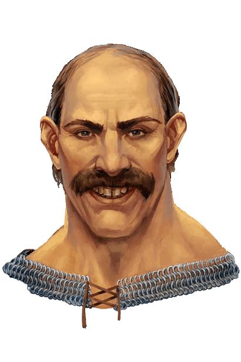

Talmandor's Bounty is currently abandoned.
Carrolby's Courtly Ranch
Harcourt Carrolby

Buys and sells regular and exotic animals, gear, and vehicles, as well as magical rods and staves.
Boons: CLOSED TO EXPEDITION TEAM
Special Stock: Glidding Turtle; Horseshoes of Speed; Plum and Plunder Sapling Rod
Halway Here Tradin' Post
Kalcora Weems

Buys and sells most adventuring gear, books, furniture, locks, tools, and religious items, as well as scrolls and wands.
Special Stock: Arcane Scroll of Comprehend Languages, Barely Visible Wand of Invisibility
Hide and Brace
Antwyn Malros

Buys and sells armor.
Special Stock: Gold Dragonhide Full Plate
Marooned Melancholy
Helbret Koors
Sells his craft beers - Koors and Koors Light - as well as food, drink and some occasional random magical items.
Special Stock: Azlanti +1 Spring-Spear
Talmandor's Bounty Chapel
Father's Eamon and Kurvis

Provides limited religious and spellcasting services. Father Eamon typically offers healing (first come-first serve) as well as counseling, dating, matchmaking, and marriage services freely. Father Kurvis typically charges for his services (healing, legal, and spellcasting).
Boons: The Chapel is currently haunted, reducing daily available channels by four. Father Eamon sets members of the expedition team up on dates each week, granting one pc a dual social round with a +2 bonnus with the colonist he's paired them with.
Special Stock: Holy Water and spellcasting components - diamond dust, silver dust, etc.
Talmandor's Smithy
Luetin Calewick

Buys and sells weapons and shields.
Boons: CLOSED TO EXPEDITION TEAM
Special Stock: +1 Heavy Wooden Shield
Thread Rare
Eskelda Teredein
Buys and sells clothing, containers, rings, and most wonderous magical items.
Special Stock: Azlanti Ring of the Dolphin; Ring of Sacred Mistletoe
Volcanic Glass
Alba Divenvaar
Buys and sells potions, alchemical items, reagents, and magical crafting supplies. Regular potion availability is limited by her spell list.
Boons: She is willing to buy reagents at 50% value, potions at 75% value (split profit), and will pay full price for arcane spells and formulae she can learn (adds to her spellbook). She can also take commissions.
Special Stock: Potion of Reduce Person (CL1); Potion of Slipstream (CL3)
Gimble the Hoarder
Ghosthater Goblins

The Ghosthater Goblin Tribe is the dominant goblin tribe on the island of Ancorato, so named because their tribal coming-of-age ritual requires the monkey goblin adolescents to charge through and kill the ghost at the pink circle without showing fear. While the tribe considered moving into the abandoned Talmandor's Bounty colony, they have instead established a peaceful trade relationship, and are located only an hours hike away.
Special: The Ghosthater Tribe is small but mighty. Each time the leader of one of their rival gangs are defeated, they grow in size, strength, and wealth. Their rivals are the Shellcrakers (defeated), Blood Shells, Dead Keepers, Moon Screamers, and Spider Biters.
Boons: Unlock Monkey Goblin as playable race, Unlock Gimble the Hoarder as a merchant at the Ghosthater Tribe - Except for rolled items, his entire stock is goblin made, non-masterwork and small-sized (where applicable). Goblin made activated magical items are worth 90% the normal price and have a 5% chance of not functioning.
POC: Stops in at the Halway Here Tradin' Post each week to make exchanges with the colony (via Kalcora Weems) and update Kalcora on their stock.